2024 Advanced Higher Biology marking instructions
Source: Scottish Qualifications Authority (SQA) / Qualifications Scotland. This is a StemInteract HTML companion, not an official HTML edition. Selectable text is supplied alongside original page images. Use the images or original PDF for equations, powers, fractions, vector notation, tables and diagrams; text extraction cannot fully preserve mathematical layout.
Jump to a question
PDF page 1
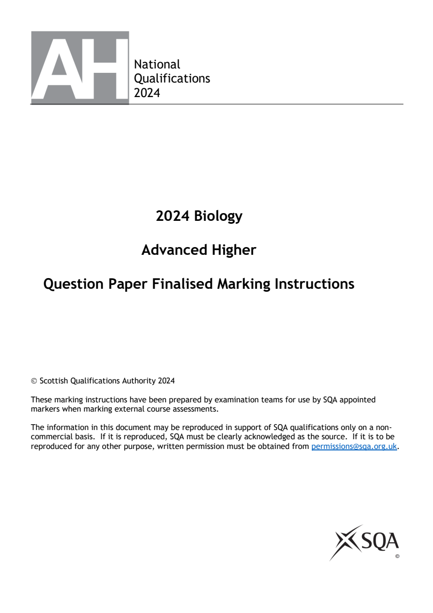
Selectable page text
National
Qualifications
2024
2024 Biology
Advanced Higher
Question Paper Finalised Marking Instructions
© Scottish Qualifications Authority 2024
These marking instructions have been prepared by examination teams for use by SQA appointed
markers when marking external course assessments.
The information in this document may be reproduced in support of SQA qualifications only on a non-
commercial basis. If it is reproduced, SQA must be clearly acknowledged as the source. If it is to be
reproduced for any other purpose, written permission must be obtained from permissions@sqa.org.uk.PDF page 2
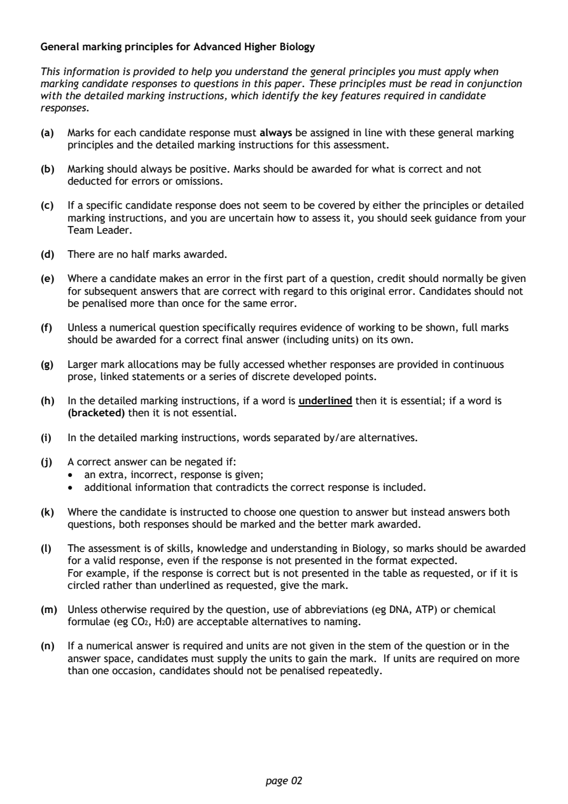
Selectable page text
General marking principles for Advanced Higher Biology
This information is provided to help you understand the general principles you must apply when
marking candidate responses to questions in this paper. These principles must be read in conjunction
with the detailed marking instructions, which identify the key features required in candidate
responses.
(a) Marks for each candidate response must always be assigned in line with these general marking
principles and the detailed marking instructions for this assessment.
(b) Marking should always be positive. Marks should be awarded for what is correct and not
deducted for errors or omissions.
(c) If a specific candidate response does not seem to be covered by either the principles or detailed
marking instructions, and you are uncertain how to assess it, you should seek guidance from your
Team Leader.
(d) There are no half marks awarded.
(e) Where a candidate makes an error in the first part of a question, credit should normally be given
for subsequent answers that are correct with regard to this original error. Candidates should not
be penalised more than once for the same error.
(f) Unless a numerical question specifically requires evidence of working to be shown, full marks
should be awarded for a correct final answer (including units) on its own.
(g) Larger mark allocations may be fully accessed whether responses are provided in continuous
prose, linked statements or a series of discrete developed points.
(h) In the detailed marking instructions, if a word is underlined then it is essential; if a word is
(bracketed) then it is not essential.
(i) In the detailed marking instructions, words separated by/are alternatives.
(j) A correct answer can be negated if:
• an extra, incorrect, response is given;
• additional information that contradicts the correct response is included.
(k) Where the candidate is instructed to choose one question to answer but instead answers both
questions, both responses should be marked and the better mark awarded.
(l) The assessment is of skills, knowledge and understanding in Biology, so marks should be awarded
for a valid response, even if the response is not presented in the format expected.
For example, if the response is correct but is not presented in the table as requested, or if it is
circled rather than underlined as requested, give the mark.
(m) Unless otherwise required by the question, use of abbreviations (eg DNA, ATP) or chemical
formulae (eg CO , H 0) are acceptable alternatives to naming.
2 2
(n) If a numerical answer is required and units are not given in the stem of the question or in the
answer space, candidates must supply the units to gain the mark. If units are required on more
than one occasion, candidates should not be penalised repeatedly.
page 02PDF page 3
Paper 1, Question 1Paper 1, Question 2Paper 1, Question 3Paper 1, Question 4Paper 1, Question 5Paper 1, Question 6Paper 1, Question 7Paper 1, Question 8Paper 1, Question 9Paper 1, Question 10Paper 1, Question 11Paper 1, Question 12Paper 1, Question 13Paper 1, Question 14Paper 1, Question 15Paper 1, Question 16Paper 1, Question 17Paper 1, Question 18Paper 1, Question 19Paper 1, Question 20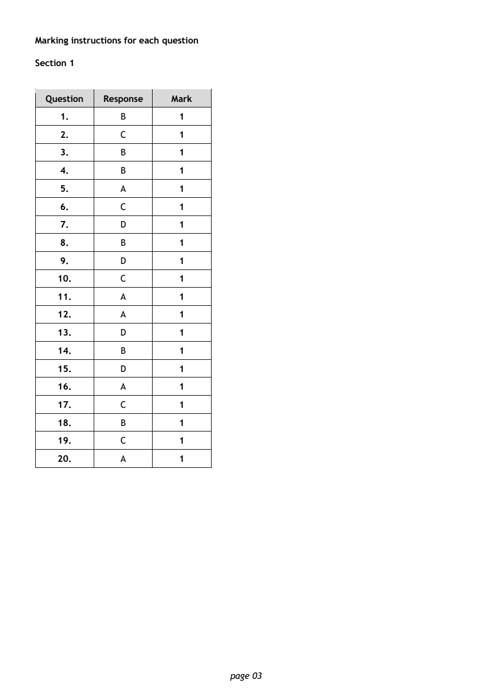
Selectable page text
Marking instructions for each question
Section 1
Question Response Mark
1. B 1
2. C 1
3. B 1
4. B 1
5. A 1
6. C 1
7. D 1
8. B 1
9. D 1
10. C 1
11. A 1
12. A 1
13. D 1
14. B 1
15. D 1
16. A 1
17. C 1
18. B 1
19. C 1
20. A 1
page 03PDF page 4
Paper 2, Question 1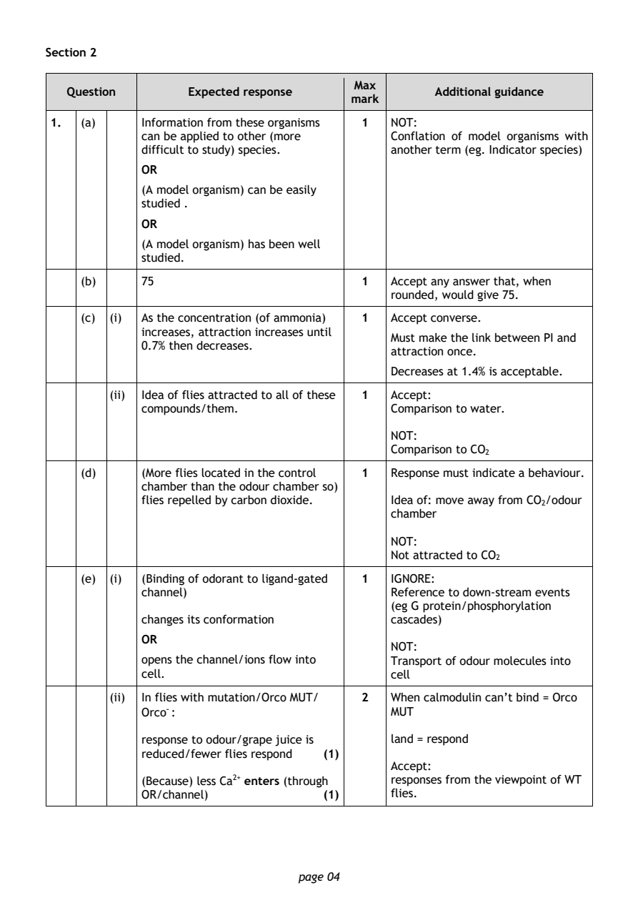
Selectable page text
Section 2
Max
Question Expected response Additional guidance
mark
1. (a) Information from these organisms 1 NOT:
can be applied to other (more Conflation of model organisms with
difficult to study) species. another term (eg. Indicator species)
OR
(A model organism) can be easily
studied .
OR
(A model organism) has been well
studied.
(b) 75 1 Accept any answer that, when
rounded, would give 75.
(c) (i) As the concentration (of ammonia) 1 Accept converse.
increases, attraction increases until
Must make the link between PI and
0.7% then decreases.
attraction once.
Decreases at 1.4% is acceptable.
(ii) Idea of flies attracted to all of these 1 Accept:
compounds/them. Comparison to water.
NOT:
Comparison to CO
2
(d) (More flies located in the control 1 Response must indicate a behaviour.
chamber than the odour chamber so)
flies repelled by carbon dioxide. Idea of: move away from CO /odour
2
chamber
NOT:
Not attracted to CO
2
(e) (i) (Binding of odorant to ligand-gated 1 IGNORE:
channel) Reference to down-stream events
(eg G protein/phosphorylation
changes its conformation cascades)
OR
NOT:
opens the channel/ions flow into Transport of odour molecules into
cell. cell
(ii) In flies with mutation/Orco MUT/ 2 When calmodulin can’t bind = Orco
Orco⁻ : MUT
response to odour/grape juice is land = respond
reduced/fewer flies respond (1)
Accept:
(Because) less Ca²⁺ enters (through responses from the viewpoint of WT
OR/channel) (1) flies.
page 04PDF page 5
Paper 2, Question 2Paper 2, Question 3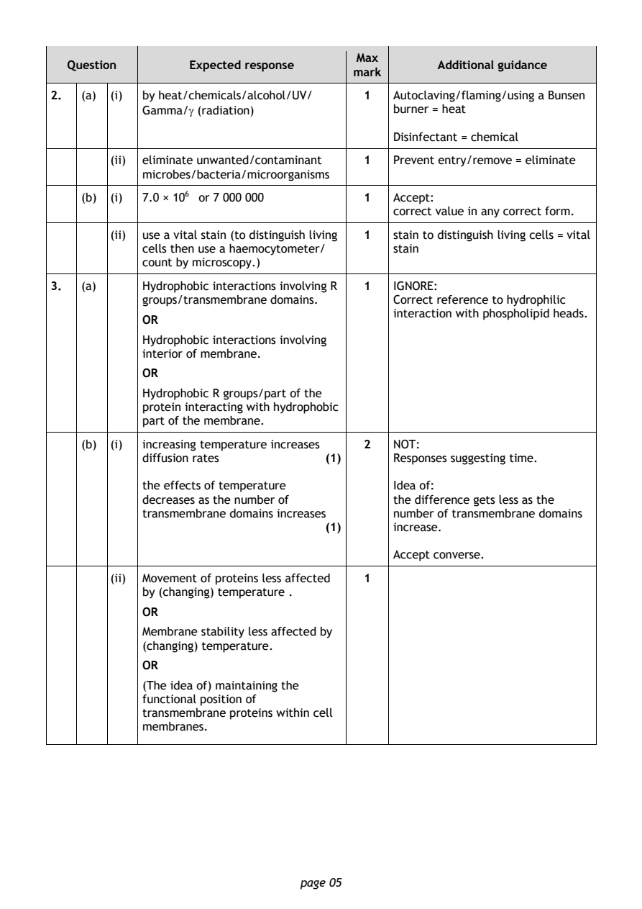
Selectable page text
Max
Question Expected response Additional guidance
mark
2. (a) (i) by heat/chemicals/alcohol/UV/ 1 Autoclaving/flaming/using a Bunsen
Gamma/γ (radiation) burner = heat
Disinfectant = chemical
(ii) eliminate unwanted/contaminant 1 Prevent entry/remove = eliminate
microbes/bacteria/microorganisms
(b) (i) 7.0 × 10⁶ or 7 000 000 1 Accept:
correct value in any correct form.
(ii) use a vital stain (to distinguish living 1 stain to distinguish living cells = vital
cells then use a haemocytometer/ stain
count by microscopy.)
3. (a) Hydrophobic interactions involving R 1 IGNORE:
groups/transmembrane domains. Correct reference to hydrophilic
interaction with phospholipid heads.
OR
Hydrophobic interactions involving
interior of membrane.
OR
Hydrophobic R groups/part of the
protein interacting with hydrophobic
part of the membrane.
(b) (i) increasing temperature increases 2 NOT:
diffusion rates (1) Responses suggesting time.
the effects of temperature Idea of:
decreases as the number of the difference gets less as the
transmembrane domains increases number of transmembrane domains
(1) increase.
Accept converse.
(ii) Movement of proteins less affected 1
by (changing) temperature .
OR
Membrane stability less affected by
(changing) temperature.
OR
(The idea of) maintaining the
functional position of
transmembrane proteins within cell
membranes.
page 05PDF page 6
Paper 2, Question 4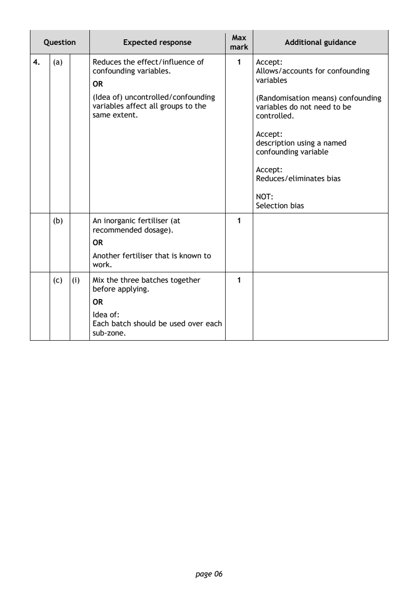
Selectable page text
Max
Question Expected response Additional guidance
mark
4. (a) Reduces the effect/influence of 1 Accept:
confounding variables. Allows/accounts for confounding
variables
OR
(Idea of) uncontrolled/confounding (Randomisation means) confounding
variables affect all groups to the variables do not need to be
same extent. controlled.
Accept:
description using a named
confounding variable
Accept:
Reduces/eliminates bias
NOT:
Selection bias
(b) An inorganic fertiliser (at 1
recommended dosage).
OR
Another fertiliser that is known to
work.
(c) (i) Mix the three batches together 1
before applying.
OR
Idea of:
Each batch should be used over each
sub-zone.
page 06PDF page 7
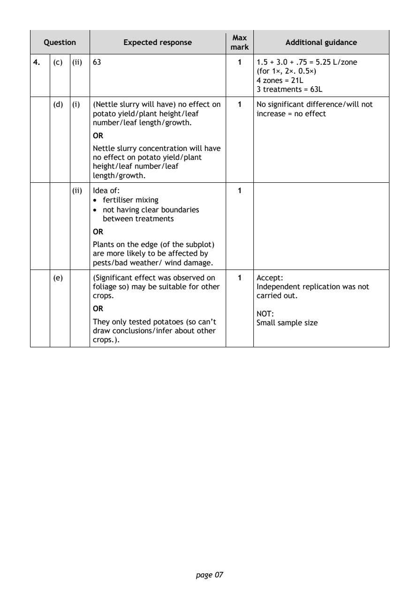
Selectable page text
Max
Question Expected response Additional guidance
mark
4. (c) (ii) 63 1 1.5 + 3.0 + .75 = 5.25 L/zone
(for 1×, 2×. 0.5×)
4 zones = 21L
3 treatments = 63L
(d) (i) (Nettle slurry will have) no effect on 1 No significant difference/will not
potato yield/plant height/leaf increase = no effect
number/leaf length/growth.
OR
Nettle slurry concentration will have
no effect on potato yield/plant
height/leaf number/leaf
length/growth.
(ii) Idea of: 1
• fertiliser mixing
• not having clear boundaries
between treatments
OR
Plants on the edge (of the subplot)
are more likely to be affected by
pests/bad weather/ wind damage.
(e) (Significant effect was observed on 1 Accept:
foliage so) may be suitable for other Independent replication was not
crops. carried out.
OR
NOT:
They only tested potatoes (so can’t Small sample size
draw conclusions/infer about other
crops.).
page 07PDF page 8
Paper 2, Question 5Paper 2, Question 6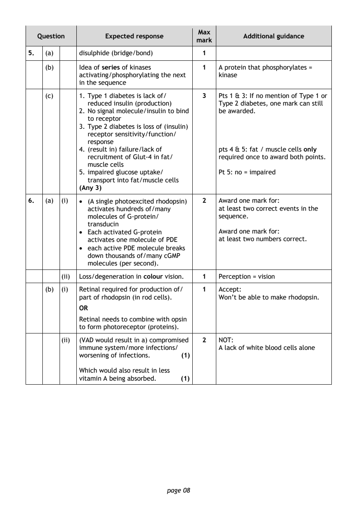
Selectable page text
Max
Question Expected response Additional guidance
mark
5. (a) disulphide (bridge/bond) 1
(b) Idea of series of kinases 1 A protein that phosphorylates =
activating/phosphorylating the next kinase
in the sequence
(c) 1. Type 1 diabetes is lack of/ 3 Pts 1 & 3: If no mention of Type 1 or
reduced insulin (production) Type 2 diabetes, one mark can still
2. No signal molecule/insulin to bind be awarded.
to receptor
3. Type 2 diabetes is loss of (insulin)
receptor sensitivity/function/
response
4. (result in) failure/lack of pts 4 & 5: fat / muscle cells only
recruitment of Glut-4 in fat/ required once to award both points.
muscle cells
5. impaired glucose uptake/ Pt 5: no = impaired
transport into fat/muscle cells
(Any 3)
6. (a) (i) • (A single photoexcited rhodopsin) 2 Award one mark for:
activates hundreds of/many at least two correct events in the
molecules of G-protein/ sequence.
transducin
• Each activated G-protein Award one mark for:
activates one molecule of PDE at least two numbers correct.
• each active PDE molecule breaks
down thousands of/many cGMP
molecules (per second).
(ii) Loss/degeneration in colour vision. 1 Perception = vision
(b) (i) Retinal required for production of/ 1 Accept:
part of rhodopsin (in rod cells). Won’t be able to make rhodopsin.
OR
Retinal needs to combine with opsin
to form photoreceptor (proteins).
(ii) (VAD would result in a) compromised 2 NOT:
immune system/more infections/ A lack of white blood cells alone
worsening of infections. (1)
Which would also result in less
vitamin A being absorbed. (1)
page 08PDF page 9
Paper 2, Question 7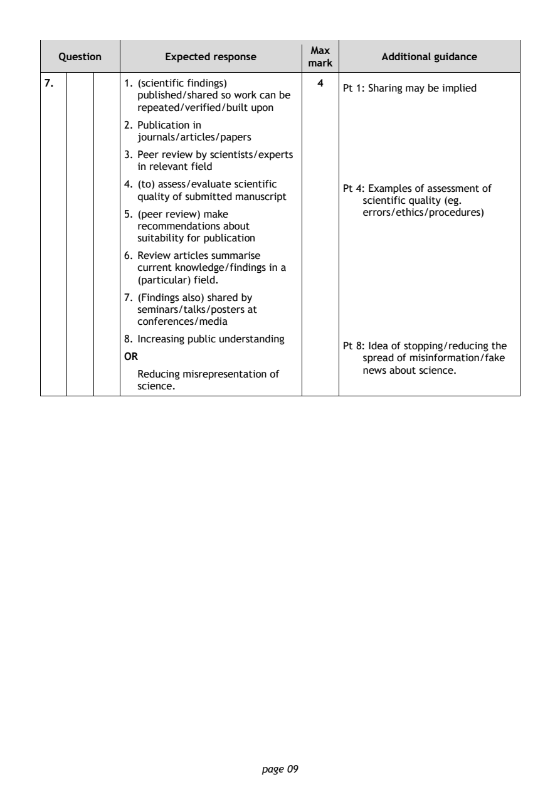
Selectable page text
Max
Question Expected response Additional guidance
mark
7. 1. (scientific findings) 4
Pt 1: Sharing may be implied
published/shared so work can be
repeated/verified/built upon
2. Publication in
journals/articles/papers
3. Peer review by scientists/experts
in relevant field
4. (to) assess/evaluate scientific
Pt 4: Examples of assessment of
quality of submitted manuscript
scientific quality (eg.
5. (peer review) make errors/ethics/procedures)
recommendations about
suitability for publication
6. Review articles summarise
current knowledge/findings in a
(particular) field.
7. (Findings also) shared by
seminars/talks/posters at
conferences/media
8. Increasing public understanding
Pt 8: Idea of stopping/reducing the
OR spread of misinformation/fake
news about science.
Reducing misrepresentation of
science.
page 09PDF page 10
Paper 2, Question 8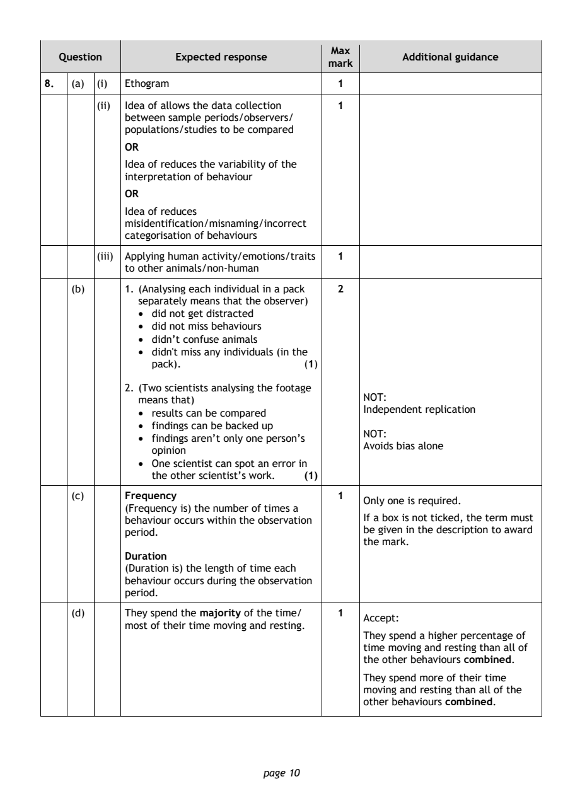
Selectable page text
Max
Question Expected response Additional guidance
mark
8. (a) (i) Ethogram 1
(ii) Idea of allows the data collection 1
between sample periods/observers/
populations/studies to be compared
OR
Idea of reduces the variability of the
interpretation of behaviour
OR
Idea of reduces
misidentification/misnaming/incorrect
categorisation of behaviours
(iii) Applying human activity/emotions/traits 1
to other animals/non-human
(b) 1. (Analysing each individual in a pack 2
separately means that the observer)
• did not get distracted
• did not miss behaviours
• didn’t confuse animals
• didn't miss any individuals (in the
pack). (1)
2. (Two scientists analysing the footage
means that) NOT:
Independent replication
• results can be compared
• findings can be backed up
NOT:
• findings aren’t only one person’s
Avoids bias alone
opinion
• One scientist can spot an error in
the other scientist’s work. (1)
(c) Frequency 1
Only one is required.
(Frequency is) the number of times a
behaviour occurs within the observation If a box is not ticked, the term must
period. be given in the description to award
the mark.
Duration
(Duration is) the length of time each
behaviour occurs during the observation
period.
(d) They spend the majority of the time/ 1
Accept:
most of their time moving and resting.
They spend a higher percentage of
time moving and resting than all of
the other behaviours combined.
They spend more of their time
moving and resting than all of the
other behaviours combined.
page 10PDF page 11
Paper 2, Question 9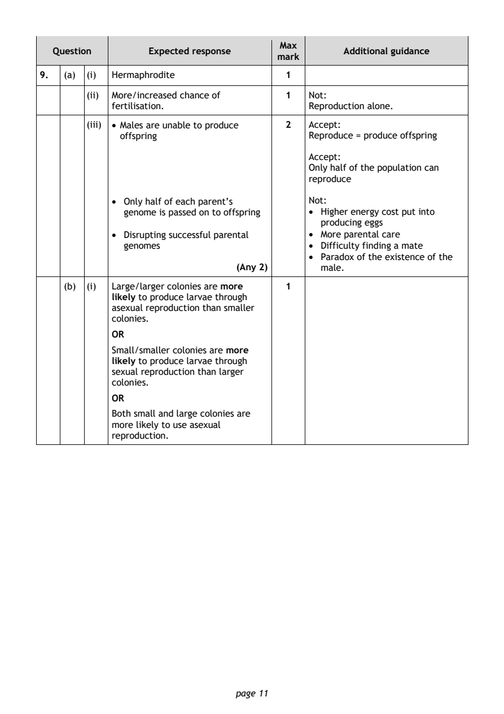
Selectable page text
Max
Question Expected response Additional guidance
mark
9. (a) (i) Hermaphrodite 1
(ii) More/increased chance of 1 Not:
fertilisation. Reproduction alone.
(iii) • Males are unable to produce 2 Accept:
offspring Reproduce = produce offspring
Accept:
Only half of the population can
reproduce
• Only half of each parent’s Not:
genome is passed on to offspring • Higher energy cost put into
producing eggs
• Disrupting successful parental • More parental care
genomes • Difficulty finding a mate
• Paradox of the existence of the
(Any 2) male.
(b) (i) Large/larger colonies are more 1
likely to produce larvae through
asexual reproduction than smaller
colonies.
OR
Small/smaller colonies are more
likely to produce larvae through
sexual reproduction than larger
colonies.
OR
Both small and large colonies are
more likely to use asexual
reproduction.
page 11PDF page 12
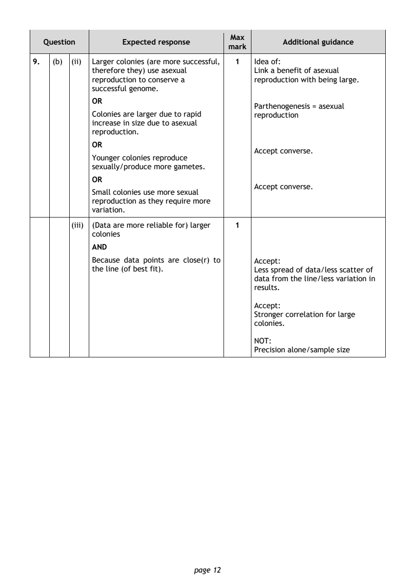
Selectable page text
Max
Question Expected response Additional guidance
mark
9. (b) (ii) Larger colonies (are more successful, 1 Idea of:
therefore they) use asexual Link a benefit of asexual
reproduction to conserve a reproduction with being large.
successful genome.
OR
Parthenogenesis = asexual
Colonies are larger due to rapid reproduction
increase in size due to asexual
reproduction.
OR
Accept converse.
Younger colonies reproduce
sexually/produce more gametes.
OR
Accept converse.
Small colonies use more sexual
reproduction as they require more
variation.
(iii) (Data are more reliable for) larger 1
colonies
AND
Because data points are close(r) to Accept:
the line (of best fit). Less spread of data/less scatter of
data from the line/less variation in
results.
Accept:
Stronger correlation for large
colonies.
NOT:
Precision alone/sample size
page 12PDF page 13
Paper 2, Question 10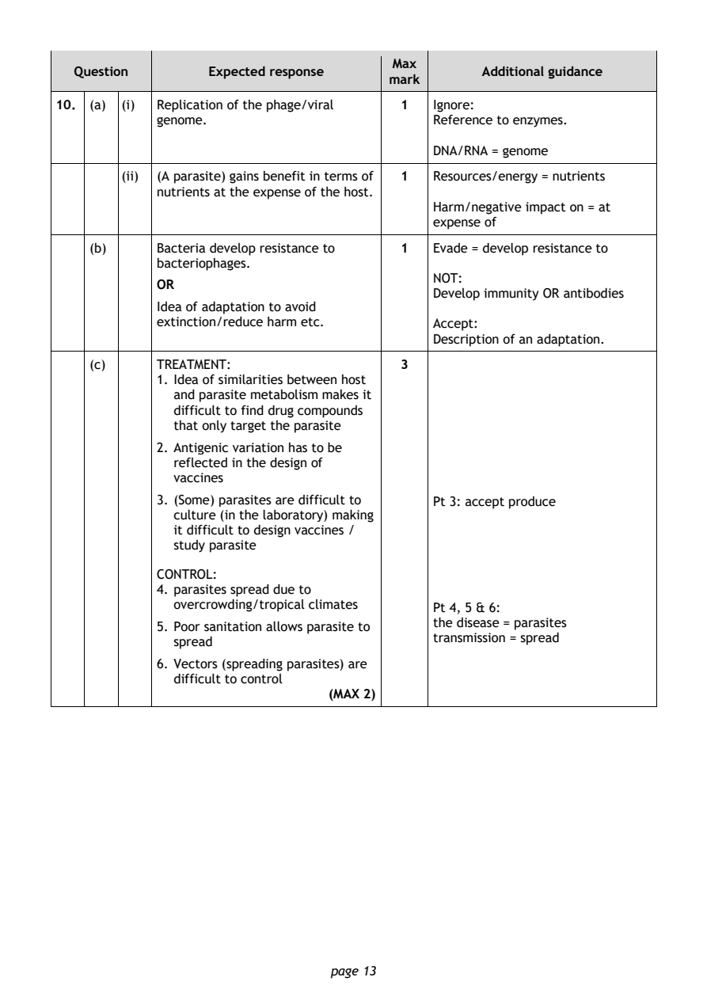
Selectable page text
Max
Question Expected response Additional guidance
mark
10. (a) (i) Replication of the phage/viral 1 Ignore:
genome. Reference to enzymes.
DNA/RNA = genome
(ii) (A parasite) gains benefit in terms of 1 Resources/energy = nutrients
nutrients at the expense of the host.
Harm/negative impact on = at
expense of
(b) Bacteria develop resistance to 1 Evade = develop resistance to
bacteriophages.
NOT:
OR
Develop immunity OR antibodies
Idea of adaptation to avoid
extinction/reduce harm etc. Accept:
Description of an adaptation.
(c) TREATMENT: 3
1. Idea of similarities between host
and parasite metabolism makes it
difficult to find drug compounds
that only target the parasite
2. Antigenic variation has to be
reflected in the design of
vaccines
3. (Some) parasites are difficult to Pt 3: accept produce
culture (in the laboratory) making
it difficult to design vaccines /
study parasite
CONTROL:
4. parasites spread due to
overcrowding/tropical climates Pt 4, 5 & 6:
the disease = parasites
5. Poor sanitation allows parasite to
transmission = spread
spread
6. Vectors (spreading parasites) are
difficult to control
(MAX 2)
page 13PDF page 14
Paper 2, Question 11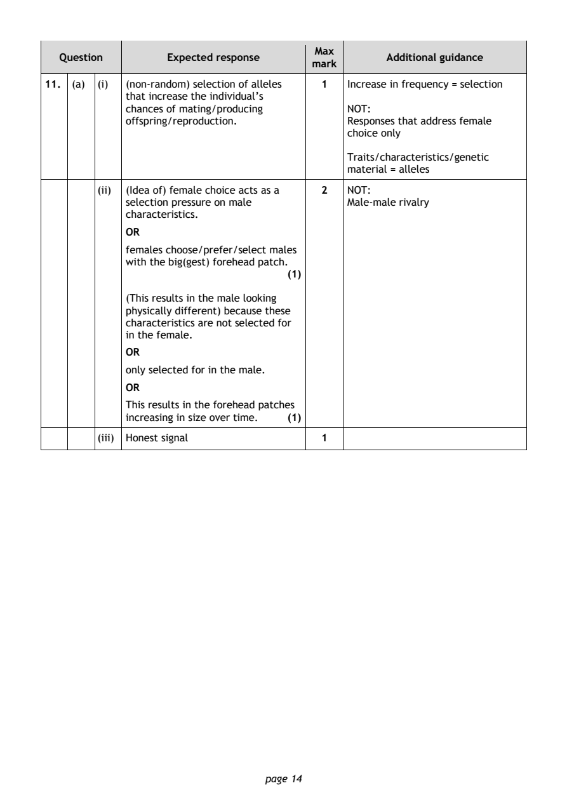
Selectable page text
Max
Question Expected response Additional guidance
mark
11. (a) (i) (non-random) selection of alleles 1 Increase in frequency = selection
that increase the individual’s
chances of mating/producing NOT:
offspring/reproduction. Responses that address female
choice only
Traits/characteristics/genetic
material = alleles
(ii) (Idea of) female choice acts as a 2 NOT:
selection pressure on male Male-male rivalry
characteristics.
OR
females choose/prefer/select males
with the big(gest) forehead patch.
(1)
(This results in the male looking
physically different) because these
characteristics are not selected for
in the female.
OR
only selected for in the male.
OR
This results in the forehead patches
increasing in size over time. (1)
(iii) Honest signal 1
page 14PDF page 15
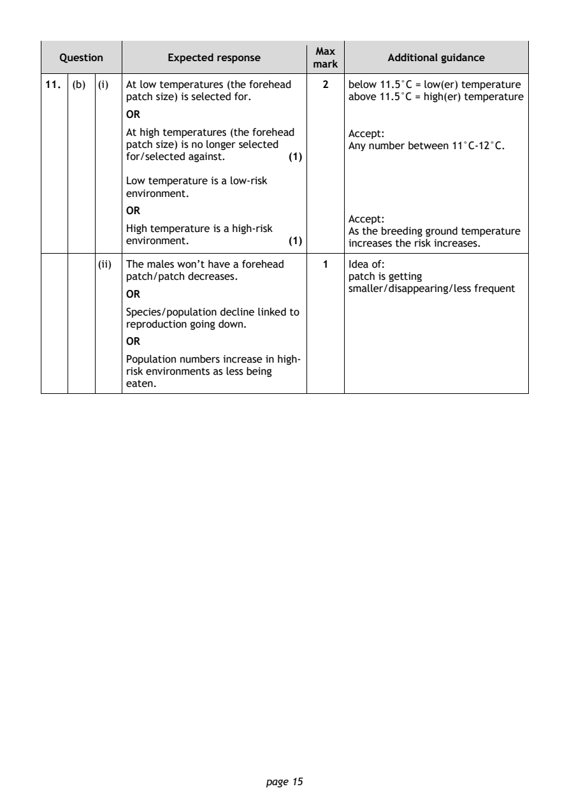
Selectable page text
Max
Question Expected response Additional guidance
mark
11. (b) (i) At low temperatures (the forehead 2 below 11.5°C = low(er) temperature
patch size) is selected for. above 11.5°C = high(er) temperature
OR
At high temperatures (the forehead Accept:
patch size) is no longer selected Any number between 11°C-12°C.
for/selected against. (1)
Low temperature is a low-risk
environment.
OR
Accept:
High temperature is a high-risk As the breeding ground temperature
environment. (1) increases the risk increases.
(ii) The males won’t have a forehead 1 Idea of:
patch/patch decreases. patch is getting
smaller/disappearing/less frequent
OR
Species/population decline linked to
reproduction going down.
OR
Population numbers increase in high-
risk environments as less being
eaten.
page 15PDF page 16
Paper 2, Question 12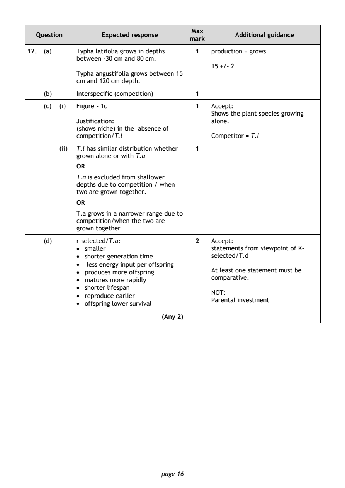
Selectable page text
Max
Question Expected response Additional guidance
mark
12. (a) Typha latifolia grows in depths 1 production = grows
between -30 cm and 80 cm.
15 +/- 2
Typha angustifolia grows between 15
cm and 120 cm depth.
(b) Interspecific (competition) 1
(c) (i) Figure - 1c 1 Accept:
Shows the plant species growing
Justification: alone.
(shows niche) in the absence of
competition/T.l Competitor = T.l
(ii) T.l has similar distribution whether 1
grown alone or with T.a
OR
T.a is excluded from shallower
depths due to competition / when
two are grown together.
OR
T.a grows in a narrower range due to
competition/when the two are
grown together
(d) r-selected/T.a: 2 Accept:
• smaller statements from viewpoint of K-
• shorter generation time selected/T.d
• less energy input per offspring
• produces more offspring At least one statement must be
comparative.
• matures more rapidly
• shorter lifespan
NOT:
• reproduce earlier
Parental investment
• offspring lower survival
(Any 2)
page 16PDF page 17
Paper 2, Question 13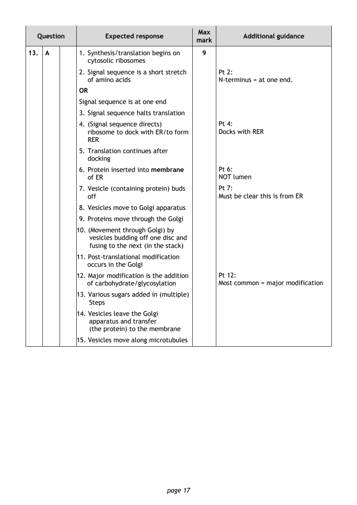
Selectable page text
Max
Question Expected response Additional guidance
mark
13. A 1. Synthesis/translation begins on 9
cytosolic ribosomes
2. Signal sequence is a short stretch Pt 2:
of amino acids N-terminus = at one end.
OR
Signal sequence is at one end
3. Signal sequence halts translation
4. (Signal sequence directs) Pt 4:
ribosome to dock with ER/to form Docks with RER
RER
5. Translation continues after
docking
6. Protein inserted into membrane Pt 6:
of ER NOT lumen
7. Vesicle (containing protein) buds Pt 7:
off Must be clear this is from ER
8. Vesicles move to Golgi apparatus
9. Proteins move through the Golgi
10. (Movement through Golgi) by
vesicles budding off one disc and
fusing to the next (in the stack)
11. Post-translational modification
occurs in the Golgi
12. Major modification is the addition Pt 12:
of carbohydrate/glycosylation Most common = major modification
13. Various sugars added in (multiple)
Steps
14. Vesicles leave the Golgi
apparatus and transfer
(the protein) to the membrane
15. Vesicles move along microtubules
page 17PDF page 18
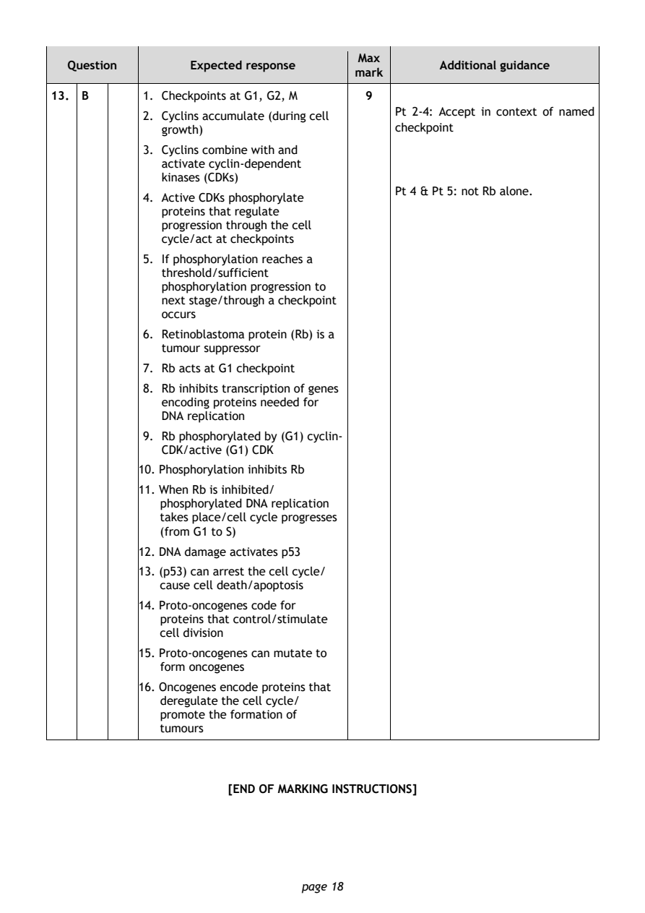
Selectable page text
Max
Question Expected response Additional guidance
mark
13. B 1. Checkpoints at G1, G2, M 9
Pt 2-4: Accept in context of named
2. Cyclins accumulate (during cell
growth) checkpoint
3. Cyclins combine with and
activate cyclin-dependent
kinases (CDKs)
Pt 4 & Pt 5: not Rb alone.
4. Active CDKs phosphorylate
proteins that regulate
progression through the cell
cycle/act at checkpoints
5. If phosphorylation reaches a
threshold/sufficient
phosphorylation progression to
next stage/through a checkpoint
occurs
6. Retinoblastoma protein (Rb) is a
tumour suppressor
7. Rb acts at G1 checkpoint
8. Rb inhibits transcription of genes
encoding proteins needed for
DNA replication
9. Rb phosphorylated by (G1) cyclin-
CDK/active (G1) CDK
10. Phosphorylation inhibits Rb
11. When Rb is inhibited/
phosphorylated DNA replication
takes place/cell cycle progresses
(from G1 to S)
12. DNA damage activates p53
13. (p53) can arrest the cell cycle/
cause cell death/apoptosis
14. Proto-oncogenes code for
proteins that control/stimulate
cell division
15. Proto-oncogenes can mutate to
form oncogenes
16. Oncogenes encode proteins that
deregulate the cell cycle/
promote the formation of
tumours
[END OF MARKING INSTRUCTIONS]
page 18